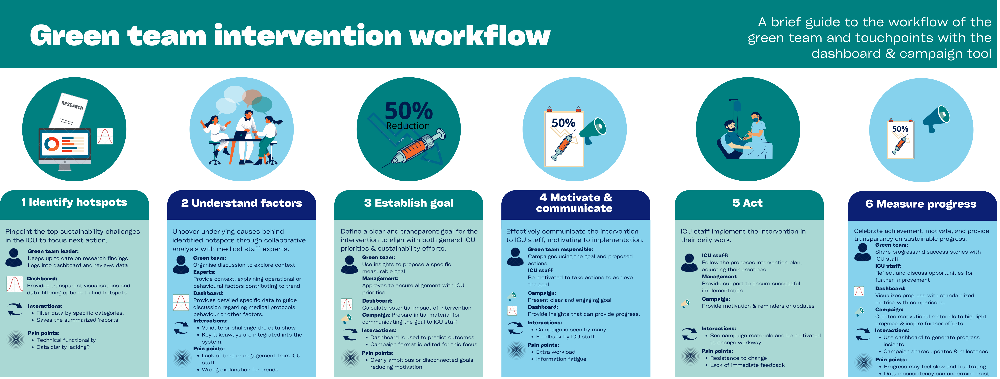
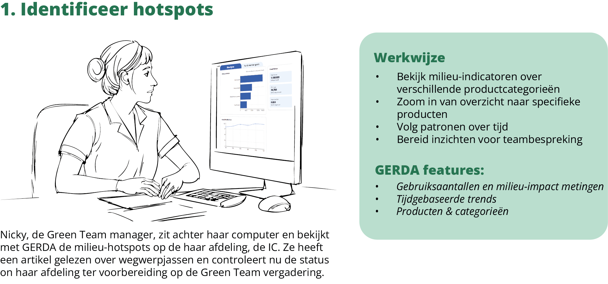

Gerda - Duurzaamheidsdashboard
Erasmus MC
Rol: Ontwerper & Data-analist
Project Impressies



Samenvatting
In dit project heb ik Duurzaamheidsdashboard 'Gerda' ontworpen en gerealiseerd. De naam 'Gerda' staat voor Groen Erasmus MC Data Assistent en dat is wat ze doet; ze ondersteunt Green Teams op afdelingen met data gedreven verduurzaming. Dit project heb ik zelfstandig in opdracht van het Duurzaamheids koersprogramma gedaan; van de eerste probleemverkenning tot en met de implementatie op de afdelingen. Ik heb gebruikersbehoeften opgehaald via interviews met verpleegkundigen en artsen in Green Teamsen deze vertaald naar user stories en een functioneel concept. Vervolgens heb ik de benodigde datastromen geanalyseerd, een datamodel ontworpen en in Power BI gebouwd. Met SQL‑queries en DAX‑measures heb ik bronnen zoals bestellingen, prijs, maar ook CO2 factoren met elkaar verbonden en indicatoren ontwikkeld zoals materiaalverbruik per afdeling. Daarna heb ik het dashboard visueel ontworpen met duidelijke navigatie, hiërarchische visualisaties en gewoon een fijne gebruikerservaring. In meerdere iteraties heb ik dit getest met eindgebruikers en verbeterd op basis van hun feedback. Tot slot heb ik de implementatie begeleid: documentatie geschreven, uitleg‑sessies verzorgd en een roadmap en governance opgezet zodat het dashboard duurzaam inzetbaar blijft.
Gebruikte Vaardigheden & Tools
Technische Vaardigheden
- Data Visualisatie
- Power BI
- SQL
- DAX
Ontwerp & Management
- UX/UI Design
- User Research
- Documentatie
- Implementatie